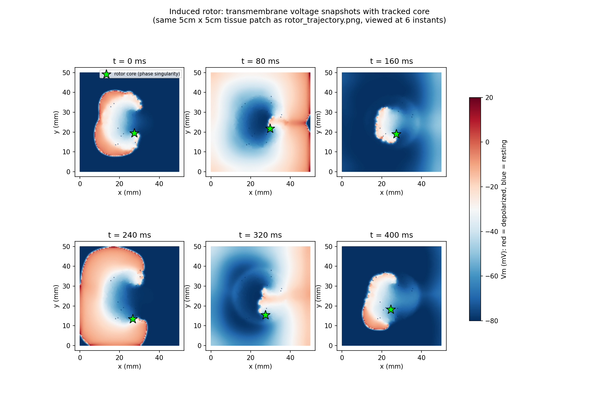
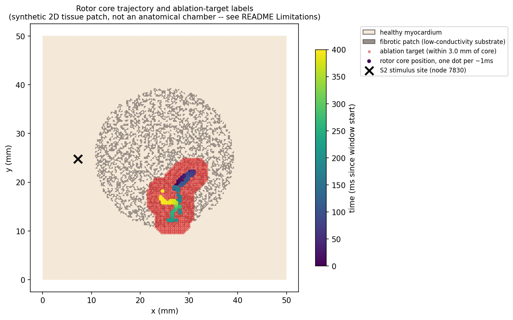

01 · Physical setup and motivation
What is cardiac tissue, for the purposes of this model?
You should come out of this section able to explain, without notation, why cardiac tissue gets modeled as two overlapping continua instead of one, and instead of a literal cell-by-cell simulation.
Physically, heart muscle is a dense pack of individual cells — cardiomyocytes, roughly 100 µm long and 10–20 µm across — each wrapped in its own membrane, each bathed in a shared extracellular fluid, and each electrically connected to its neighbors through specialized low-resistance pores called gap junctions. A gap junction is a direct channel between the interiors of two adjacent cells: ions can cross from one cell's interior straight into the next cell's interior without ever passing through the extracellular fluid. String enough cells together this way, end to end and side to side, and you get a syncytium — a tissue that behaves electrically like one continuous conducting medium, even though it's built from billions of discrete, individually-membraned cells.
That word "syncytium" is doing real work here, and it's the first reason a continuum model is defensible rather than just convenient. If cells were electrically isolated from each other — if the only way current could get from one cell to the next were by first crossing a membrane out into the extracellular fluid and then crossing another membrane back in — you'd have no choice but to model every cell and every gap individually, because there'd be no sense in which nearby cells "average out" into anything smooth. But gap junctions make the intracellular space of thousands of neighboring cells behave, for signals with wavelengths much larger than a single cell, like one continuously connected conductor. A propagating wavefront in real cardiac tissue is millimeters to centimeters wide — hundreds of cell-lengths — so from the wave's point of view, the graininess of individual cells and individual gap junctions washes out, the same way a photograph of sand looks like a smooth beach from far enough away.
Why homogenize instead of simulating every cell
There's also a purely practical reason, and it's worth being honest that it matters alongside the physical justification above: a single square centimeter of tissue holds on the order of 105–106 individual myocytes. Explicitly meshing every cell membrane, every gap junction, and the literal, geometrically irregular sliver of extracellular space between every pair of adjacent cells, for a whole simulated chamber, is not a computation anyone runs — not because it's theoretically impossible, but because it would cost many orders of magnitude more than the continuum approach for information the continuum approach already captures faithfully at the scale that matters clinically (millimeter-to-centimeter wavefronts, not micron-scale cell boundaries).
So instead of tracking the literal geometry, the model homogenizes: it replaces "a huge number of discrete cells and gaps, each with their own tiny conductivity and geometry" with "a smooth conductivity value at every point in space," chosen so that the smooth version reproduces the same current-carrying behavior the real discrete tissue has, on average, at every point. This is the same move continuum mechanics always makes — you don't track individual water molecules to compute fluid flow either — and it's valid for exactly the reason given above: the phenomena of interest (wavefronts, rotors) live at a spatial scale far larger than the thing being averaged away (single cells).
Why two domains occupying the same space
Here is the idea that makes "bidomain" more than a naming quirk, and it's worth sitting with because it's genuinely a little strange the first time you see it. At any physical point inside a block of cardiac tissue, there is both intracellular material (some cell's cytoplasm, or a gap junction connecting two cells) and, extremely nearby at the same homogenized point, extracellular material (interstitial fluid). The homogenization in the previous section doesn't pick one or the other to smooth over — it smooths both separately, producing two interpenetrating continuous media that mathematically coexist at every point of the same physical tissue volume:
- The intracellular domain — the smoothed-out continuum standing in for "all the cell interiors and gap junctions, averaged together." Its electrical potential at a point is written \(\phii\).
- The extracellular domain — the smoothed-out continuum standing in for "all the interstitial fluid, averaged together." Its potential is written \(\phie\).
"Bi-domain" literally means this: two domains, each occupying the full tissue volume simultaneously, each carrying its own current, coupled to each other only through the cell membrane that (in reality) separates them at every point. The membrane doesn't disappear in the homogenized picture — it becomes a continuous, distributed coupling between the two domains, present everywhere rather than sitting at discrete cell boundaries. That's the entire physical content of the model before a single equation gets written down: two overlapping conducting continua, glued together everywhere by a membrane that can store charge and let current leak across it. The rest of this document is about making that statement precise.
02 · The equivalent circuit model
Building the circuit from a discrete chain of cells
You should come out of this section able to draw the ladder-network circuit from scratch and explain, step by step, why shrinking its node spacing to zero produces a spatial derivative.
Section 1 established the physical picture in words: two continua, coupled everywhere by a membrane. This section makes that picture into something you could build with real resistors, a real capacitor, and a real current source — and then shows exactly where the calculus in a PDE comes from, by watching what happens as you add more and more of those components packed closer and closer together.
One membrane, in detail
Start at a single point along a 1D strand of cardiac tissue — think of a single fiber, cells strung end to end. At that point there are two electrical nodes: an intracellular node at potential \(\phii\), and an extracellular node at potential \(\phie\), physically just on the other side of the membrane at that same location. The membrane connecting them is not a plain wire — it's a two-part circuit element in parallel:
- A capacitor, \(C_m\), because the membrane is a thin insulating lipid layer separating two conductive fluids — the textbook definition of a capacitor, two conductors separated by an insulator. Charge builds up on either face of the membrane as \(\Vm = \phii - \phie\) changes, exactly like any capacitor.
-
A nonlinear current source, \(I_\text{ion}\), because the membrane is
also studded with ion channels — proteins that let specific ions (Na\(^+\),
K\(^+\), Ca\(^{2+}\), …) cross depending on the current value of \(\Vm\) itself
and on each channel's own internal gating state. That voltage-dependence is exactly what
makes it a nonlinear source rather than a plain resistor: a resistor's current
is proportional to voltage; \(I_\text{ion}(\Vm, \dots)\) is some complicated,
state-dependent function of it, given by a separate system of equations (a
cell model — e.g. Courtemanche, which this project's openCARP
runs use; see
opencarp/README.md. Deriving a cell model is its own topic and out of scope here — for this document, treat \(I_\text{ion}\) as "some function of \(\Vm\) and internal gating variables, supplied by someone else's model.")
These two elements sit in parallel between the same two nodes, so the same voltage \(\Vm\) drives both, and the total current crossing the membrane at that point is their sum: \(C_m \, \partial \Vm/\partial t\) (the capacitive current) plus \(I_\text{ion}(\Vm, \dots)\) (the ionic current). Hold onto that sum — it reappears, unchanged, on the right-hand side of the actual bidomain PDEs in §4.
Chaining nodes together
Now don't stop at one point. Lay down a whole row of these intracellular/extracellular/ membrane triplets, spaced a small distance \(\Delta x\) apart along the fiber, and connect each rail to its own neighbors with resistors:
- Intracellular resistors connect neighboring intracellular nodes — standing in for cytoplasm resistance plus gap-junction resistance between adjacent sample points.
- Extracellular resistors connect neighboring extracellular nodes — standing in for interstitial-fluid resistance between the same two points.
The result is a ladder network: two resistor rails running in parallel (one intracellular, one extracellular), rung-connected at every node by a membrane branch. This is not a metaphor for the bidomain model — it is the bidomain model, in its most concrete, buildable form, before anyone takes a continuum limit.
Current balance at one node
Pick one interior node, call it node \(n\), sitting between neighbors \(n-1\) and \(n+1\). Kirchhoff's current law says: whatever current flows into node \(n\)'s intracellular terminal from its two resistor neighbors must flow out somewhere — and the only place it can go is down through the membrane branch into the extracellular rail. Writing \(r_i\) for the intracellular resistor value and using Ohm's law for each resistor:
The right-hand side needs one more piece of bookkeeping: \(C_m \dot\Vm + I_\text{ion}\) is a current density (current per unit membrane area), not a raw current, so it has to be multiplied by however much membrane area actually sits at node \(n\). In this 1D cable, that's \(\beta \, \Delta x\), where \(\beta\) is the membrane's surface-to- volume ratio — membrane area per unit length of fiber (in the full 3D case, membrane area per unit tissue volume). \(\beta\) is large for cardiac tissue (thin cells pack a lot of membrane area into a small volume), and it's exactly the same \(\beta\) that appears in the bidomain PDEs in §4 — it's the geometric factor that converts a per-area membrane quantity into a per-volume (or here, per-length) one, which is what a continuum equation needs.
Taking the continuum limit
Now shrink \(\Delta x\). As the nodes get closer together, index \(n\) stops being a useful label and position \(x\) takes over: \(\phii[n] \to \phii(x)\), \(\phii[n\pm 1] \to \phii(x \pm \Delta x)\). It also helps to stop thinking of \(r_i\) as "the resistance of this one particular resistor" and instead define \(R_i\) = resistance per unit length of intracellular medium, so that the resistor spanning the gap \(\Delta x\) has resistance \(r_i = R_i \, \Delta x\) — twice the spacing, twice the resistance, which is exactly how a uniform resistive medium behaves. Substituting into (2.1) and dividing through by \(\Delta x\):
Look closely at the fraction on the left — it should look familiar. It's exactly the standard centered finite-difference formula for a second derivative:
which you can confirm for yourself with a two-line Taylor expansion (this is exactly the formula worked pseudocode uses in §6, and it's the subject of Practice Problem 3 in §8). Taking \(\Delta x \to 0\) in (2.2), the discrete sum-of-neighbors term becomes a genuine second spatial derivative, and the whole equation becomes:
Define \(\sigma_i \equiv 1/R_i\) (conductance per unit length — the reciprocal of resistance per unit length) and this is precisely the 1D version of the intracellular bidomain equation you'll see written in full, tensor form in §4: \(\sigma_i \, \partial^2 \phii/\partial x^2 = \beta(C_m \partial \Vm/\partial t + I_\text{ion})\), i.e. \(\nabla\cdot(\sigma_i \nabla \phii) = \beta(\cdots)\) once you allow more than one spatial dimension. This is the crux move of the whole document: a spatial second derivative in a PDE is nothing more exotic than "the continuum limit of summing up current flowing in from a resistor network's discrete neighbors." Nothing about that derivation required anything you didn't already have in Figure 2 — it's Ohm's law, Kirchhoff's current law, and one Taylor expansion.
The 1D lumped-resistor argument above is built to make the discrete-to-derivative step as transparent as possible, and it does that faithfully — but it quietly sweeps cross-sectional area into the definition of \(R_i\), so \(\sigma_i = 1/R_i\) here has units of siemens·meter (conductance per unit length), not the siemens/meter of a true material conductivity. In the full 3D formulation used from §4 onward, \(\sigma_i\) is a genuine material property (S/m), the current is a proper current density (A/m²), and the geometric bookkeeping this section did by hand (spacing, cross-section) is instead carried automatically by the divergence operator acting on a real 3D vector field. The physical story — discrete neighbor differences becoming a second derivative in the limit — is identical either way; only the unit bookkeeping differs.
One more detail worth being explicit about, because it directly explains something in §4: redo this entire derivation for the extracellular rail at the same node, and you get the same result with two changes. First, obviously, \(\phii \to \phie\) and \(\sigma_i \to \sigma_e\). Second — and this is the important one — the sign of the coupling flips. Current that flows out of the intracellular rail through the membrane flows into the extracellular rail through that same membrane (charge doesn't vanish at the membrane; it crosses it). That's why the extracellular equation in §4 carries an overall minus sign relative to the intracellular one — not an arbitrary convention, but the direct bookkeeping consequence of "whatever current the membrane pulls from one rail, it deposits in the other."
03 · Divergence and current conservation
What \(\nabla\cdot(\sigma\nabla\varphi)\) actually says
You should come out of this section able to read \(\nabla\cdot(\sigma\nabla\varphi) = \text{source}\) as a sentence about local current balance, not a string of symbols to manipulate.
§2 built the derivative you need out of a discrete resistor chain, in 1D, by brute force — Kirchhoff's law at every node, then a limit. That's the right way to build intuition for where a derivative comes from, but the actual bidomain equations live in two or three spatial dimensions, and re-deriving them node-by-node in 3D would be unreadable. This section gives you the tool that does the same bookkeeping in any number of dimensions at once — divergence — and, crucially, insists on understanding what it means physically before using it as notation.
Divergence, physically, before any symbols
Take any vector field that represents a flow of something — current density \(\mathbf{J}\) is the one that matters here, but the same idea works for water flow, heat flow, anything that moves through space. Now imagine a tiny closed box sitting somewhere in that field — small enough that the field barely changes across it, but with a real, nonzero volume. Current flows in through some faces of the box and out through others. Add it all up: total current flowing out across every face, minus total current flowing in. Divide that net outflow by the box's volume. Shrink the box toward a point. Whatever number that ratio approaches is the divergence of \(\mathbf{J}\) at that point — literally "net outflow per unit volume, in the limit of an infinitesimally small volume."
Two cases are worth holding in your head side by side, because the contrast is the whole idea:
- If exactly as much current flows into the box as flows out — current is just passing through, like water through a section of pipe with no leaks — the net outflow is zero, and so is the divergence at that point. Nothing is being created or destroyed there.
- If more current leaves the box than enters, something inside the box must be generating current from somewhere else — a source. If less leaves than enters, something inside is removing current, diverting it somewhere else — a sink. Either way, a nonzero divergence at a point means "this point is a source or sink of the flow," not just a conduit for it.
From "net outflow" to \(\nabla\cdot\mathbf{J}\)
That whole paragraph above is the definition of divergence — the standard symbolic formula is just a compact way to write "sum the flux through every face, divide by volume, shrink to a point":
\(\partial V\) is the boundary surface of the little volume \(V\), \(\hat{\mathbf n}\) is the outward-pointing direction at each patch of that surface, and \(\mathbf{J}\cdot \hat{\mathbf n}\) picks out how much of the flow at that patch is actually crossing outward through it (flow running parallel to the surface doesn't count — nothing is leaving). In Cartesian coordinates this reduces to the familiar sum of partial derivatives, \(\nabla\cdot\mathbf{J} = \partial J_x/\partial x + \partial J_y/\partial y + \partial J_z/\partial z\), but that formula is a consequence of the physical definition (3.1), not the definition itself — worth remembering the physical version first, because it's the version that tells you why the equations below have the shape they do.
Ohm's law gives you the current; conservation gives you the equation
Current density in a conducting medium obeys a continuum version of Ohm's law: current flows from high potential to low potential, at a rate set by the conductivity, \(\mathbf{J} = -\sigma \nabla\varphi\). (The minus sign matters and is worth pausing on: \(\nabla\varphi\) points in the direction potential increases fastest; current physically flows the opposite way, from high to low, which is exactly what the minus sign encodes.) Combine that with the conservation argument from §2 — whatever current leaves the intracellular domain locally must be exactly the current crossing the membrane there, nowhere else for it to go — and you get, at every point:
Read the right-hand side first, since it's the physically meaningful part: it's the same current-per-unit-volume leaving the intracellular domain through the membrane that §2 derived node by node, now written as a source/sink density rather than a per-node quantity — negative because current is leaving the intracellular domain (a sink, in the language of the previous figure). Substitute Ohm's law, \(\mathbf J_i = -\sigma_i\nabla\phii\), into the left-hand side and the two minus signs cancel:
This is exactly the 1D result (2.4) generalized to any number of dimensions, and it's exactly the first bidomain equation §4 states properly. Nothing new happened here beyond swapping the 1D "sum over two neighbors, take a limit" argument of §2 for the dimension-agnostic "flux through a shrinking box" argument of this section — same physics, more general tool. §4 walks through why the extracellular equation carries the opposite sign (current crossing the membrane is a sink for one domain and a source for the other, exactly as §2's closing paragraph anticipated), and introduces the one remaining piece — \(\sigma\) as a tensor, not a number — that this section deliberately deferred.
\(\nabla\cdot(\sigma\nabla\varphi) = \text{source}\) says: the net current conducted away from this point, through the medium of conductivity \(\sigma\), equals whatever current is being locally injected or removed here. Every instance of this equation form in this document, bidomain or monodomain, is that one sentence, restated for whichever domain and source term apply.
04 · The bidomain equations
The equations, term by term
You should come out of this section able to point at every symbol in the bidomain PDEs and say, in one sentence, what physical thing it represents.
Everything is now in place. Here is the bidomain model in the form it's usually written in the EP literature (this is the field's actual standard notation, not something invented for this document):
Read (4.1) and (4.2) as one system, not two independent equations — they share the same right-hand side, and (4.3) is what actually couples them: \(\phii\) and \(\phie\) aren't free to move independently, because their difference is pinned to \(\Vm\), which is itself driven by both equations at once. This is a genuinely coupled system: you cannot solve for \(\phii\) without knowing \(\phie\) (it's needed to get \(\Vm\) for the right-hand side) and vice versa.
Every symbol, explained
- \(\phii, \phie\)
- Intracellular and extracellular electric potential (volts), the two unknowns the system solves for at every point and every instant.
- \(\Vm\)
- Transmembrane voltage, \(\phii - \phie\) by definition — not an independent unknown, just a name for that particular difference. This is the quantity a cell model's gating equations are written in terms of, and the quantity §2's membrane branch sits across.
- \(\sigi, \sige\)
- Intracellular and extracellular conductivity tensors (not scalars — see below), units siemens/meter, describing how easily current is conducted through each domain in each direction.
- \(\beta\)
- Membrane surface-to-volume ratio (m−1) — membrane area per unit tissue volume, exactly the geometric conversion factor §2 introduced by hand for the 1D cable case, now doing the same job in full 3D.
- \(C_m\)
- Membrane capacitance per unit area (F/m²) — a material property of the lipid bilayer, roughly constant across cell types.
- \(I_\text{ion}(\Vm, \mathbf{w})\)
- Ionic current per unit membrane area (A/m²), a nonlinear function of \(\Vm\) and a vector \(\mathbf w\) of internal gating variables (channel open/closed states, ion concentrations, …) that evolve according to their own separate ODEs — together, \(\Vm\) and \(\mathbf w\)'s equations are "the cell model." This project's openCARP simulations use the Courtemanche-Ramirez-Nattel human-atrial cell model; see
opencarp/README.mdfor how it's invoked. Deriving or even fully specifying a cell model is a substantial topic on its own and deliberately out of scope here — treat \(I_\text{ion}\) as a black box supplied by that separate layer.
Why \(\sigma_i\) and \(\sigma_e\) have to be tensors
A scalar conductivity says "current flows in the same direction as the driving field, just scaled by a number" — \(\mathbf J = -\sigma\nabla\varphi\) with plain-number \(\sigma\) means \(\mathbf J\) always points exactly opposite \(\nabla\varphi\). That's a fine model for an isotropic material — salt water, say, where conducting properties don't depend on direction. Cardiac tissue is not isotropic. Cardiomyocytes are elongated and packed in aligned sheets, and gap junctions are far denser end-to-end (along the fiber axis) than side-to-side — so current injected at a point spreads out preferentially along the local fiber direction, tracing an elongated ellipse rather than a circle. A single number can't encode "conducts well in this direction, less well in that one" — you need a conductivity that depends on direction, and the object that does that, while still obeying the same linear physics (double the field, double the current), is a tensor: at each point, a 3×3 (or, in a 2D sheet model, 2×2) matrix that acts on the gradient vector rather than just scaling it.
Concretely, in the local coordinate frame aligned with the fiber direction, the conductivity tensor is diagonal — a different number along the fiber than across it:
(\(l\) = longitudinal, along the fiber; \(t\) = transverse, across it; a full 3D tissue model would have two transverse directions, typically taken equal to each other — "transversely isotropic.") Multiplying a gradient vector by this matrix, rather than by a single number, is what lets \(\mathbf J\) point in a different direction than \(\nabla\varphi\) whenever the field isn't aligned with a fiber — current gets "steered" toward the easy (longitudinal) direction. That steering effect, worked through concretely, is exactly what produces the elongated elliptical wavefronts you'll see in §7b, and it's Practice Problem 2 in §8.
One more point that matters a great deal and is easy to miss: \(\sigi\) and \(\sige\) don't just each need to be tensors — their anisotropy doesn't have to match. Typical literature values (illustrative, not the specific numbers behind any particular run in this project) put the intracellular longitudinal-to-transverse ratio around 10:1, while the extracellular ratio is much closer to 2:1 — the extracellular space is far less anisotropic than the intracellular one, physically because interstitial fluid doesn't have anything like the gap-junction structure that makes the intracellular space so directionally biased. This mismatch — "unequal anisotropy ratios" in the literature's phrase — is precisely the physical fact that §5's simplifying assumption has to set aside, and it's why monodomain is a genuine approximation rather than an exact rewrite of bidomain.
(4.1)–(4.2) need boundary conditions to be a well-posed problem, and one of them is physically intuitive given everything above: at the outer edge of the tissue, no intracellular current can flow out of the tissue (there's no cell interior beyond the boundary for it to flow into), so \(\mathbf n\cdot(\sigi\nabla\phii) = 0\) there — a no-flux condition on the intracellular domain at the tissue boundary. The extracellular domain typically does not get the same treatment, since real tissue sits in a conductive bath (blood, or a perfusion chamber in a wet-lab setup) that extracellular current can flow into. This document won't dwell further on boundary conditions — they matter for a working solver but aren't where the conceptual weight of the model lives — but it's worth knowing this asymmetry exists and isn't an oversight.
05 · Deriving monodomain
Collapsing two equations into one
You should come out of this section able to derive the monodomain equation from bidomain algebraically, from the proportional-conductivity assumption alone, and state precisely what that assumption throws away.
The bidomain system (4.1)–(4.2) is expensive to solve: two coupled PDEs, two unknown fields, every timestep. Monodomain is the standard simplification, and it rests on exactly one assumption, applied to the two conductivity tensors from §4:
In words: the extracellular tensor is just the intracellular tensor scaled by a single number — same relative anisotropy (same ratio of longitudinal to transverse conductivity), just uniformly stronger or weaker everywhere. §4 already flagged that this is not quite true of real cardiac tissue (\(\approx\)10:1 intracellular anisotropy vs. \(\approx\)2:1 extracellular, in typical literature values) — so (5.1) is a genuine approximation, not a fact. Everything below is "here's what you get to assume away if you're willing to accept that approximation."
The algebra
Start from the two bidomain equations, both stated with the shared right-hand side \(S \equiv \beta(C_m\,\partial \Vm/\partial t + I_\text{ion})\) made explicit:
Substitute (5.1) into (5.3) — replace \(\sige\) with \(k\sigi\) — and divide through by \(k\):
Now both (5.2) and (5.4) have the same tensor, \(\sigi\), acting on a gradient — that's the whole point of assuming (5.1); it makes this next step possible. Because \(\nabla\cdot(\sigi\nabla(\cdot))\) is linear, subtracting (5.4) from (5.2) lets you combine the two potentials directly into their difference, \(\Vm = \phii - \phie\):
Solve (5.5) for \(S\), then substitute back \(S = \beta(C_m\partial \Vm/\partial t + I_\text{ion})\):
One equation, one unknown field (\(\Vm\)), no \(\phii\) or \(\phie\) appearing anywhere. \(\sigma_m\) — the monodomain (or "bulk") conductivity tensor" — is a weighted combination of the two original tensors that has the algebraic form of a harmonic mean; since \(\sigi\) and \(\sige\) are proportional under assumption (5.1) they share the same eigenvectors (the fiber directions), so \(\sigma_m\) is diagonal in that same frame too, with each diagonal entry the harmonic mean of the corresponding intracellular/extracellular values — still anisotropic, still direction-dependent, just one tensor instead of two.
What gets thrown away
Here's the part worth being precise about, because it's easy to state too strongly or too weakly. The monodomain equation (5.6) is self-contained in \(\Vm\): to advance it forward in time — which is all a simulation actually needs to do — you never need to know \(\phii\) or \(\phie\) individually, at any point in the computation. That's the entire value of the reduction: half the unknowns, half the linear solves, every timestep.
It does not follow that \(\phii\) and \(\phie\) are gone forever, unrecoverable in principle. Given a completed monodomain run — \(\Vm(x,t)\) at every point and time — you can, as a genuinely separate calculation, go back to the original extracellular equation (5.3) and solve it as a standalone elliptic (Poisson-like) problem, using the now-known \(\Vm\) to reconstruct its right-hand side. That reconstruction is a real, standard technique (a "forward problem" or lead-field calculation), but notice what it costs: it needs \(\sige\) back (not folded into \(\sigma_m\) — the individual tensor, which the monodomain solve itself never used), and it needs the full domain geometry, including anything electrically connected to the tissue (a surrounding blood pool or bath), because that geometry sets the boundary conditions the elliptic solve needs. None of that is "free" or already sitting inside the monodomain output — it's a second computation with its own separate inputs.
This is exactly the fork docs/PHASE2_METHODOLOGY.md §7 describes as the two
"genuine" options for getting a real extracellular potential out of a simulation: run
full bidomain (\(\phie\) is a direct output of the solve, no extra step), or run the
cheaper monodomain and then perform the forward-problem reconstruction above as a
separate step on top of its \(\Vm\) output. This project's Phase 2 openCARP run used
monodomain (its parameters.par sets bidomain = 0) and did
neither of those two genuine options — it approximated the
unipolar electrogram directly as local \(\Vm(t)\), skipping the forward-problem
reconstruction entirely rather than paying its cost. That's a real, documented
limitation, and now you can see exactly what it's a shortcut past: not just
"less accurate physics" in the abstract, but specifically skipping the elliptic
reconstruction that (5.6)'s derivation shows is required — and only required
— because monodomain's own solve never touches \(\phie\) at all.
06 · Discretization
From continuous PDE to code that runs
You should come out of this section able to read (or write) pseudocode for a basic explicit monodomain solver, and explain why FEM is the right tool for openCARP's unstructured meshes.
Every equation so far has been continuous — \(\Vm\) is a function defined at every one of infinitely many points in space and time. A computer can't store that; it can only store finitely many numbers. Discretization is the general name for turning a continuous PDE into a finite system a computer can actually solve. There are two dominant approaches, and it's worth understanding both conceptually before committing to one.
Lay down a regular grid of points. Replace every derivative in the PDE with an algebraic difference quotient between a point and its immediate neighbors — exactly the formula (2.3) already derived, now used in reverse: instead of taking \(\Delta x \to 0\) to get a derivative, stop at a small but finite \(\Delta x\) to approximate one. Simple to implement, cheap per point, but tied to a regular grid — awkward for the curved, irregular boundary of a real heart chamber.
Cover the domain with a mesh of small, possibly irregular elements (triangles in 2D, tetrahedra in 3D) that can conform tightly to any geometry. Instead of approximating derivatives pointwise, multiply the PDE by a test function and integrate over the domain (the "weak form," below) — more setup machinery, but the natural choice when the domain's shape is complicated, which real cardiac anatomy always is.
This document works FD all the way to runnable pseudocode, because it's the more direct continuation of everything §2–3 already built. FEM gets a conceptual pass at the end of this section — enough to know what "weak formulation" means and why it's the tool real simulators reach for — without a full derivation.
The reaction-diffusion form
Before discretizing, it helps to rewrite the monodomain equation (5.6) in the form most solver code actually uses. Divide through by \(\beta C_m\):
This is a reaction-diffusion equation: a diffusion term that spreads \(\Vm\) out smoothly through the tissue (structurally identical to the heat equation, with \(\sigma_m/\beta C_m\) playing the role of a diffusion coefficient), plus a reaction term — the nonlinear membrane kinetics — that happens locally at each point, independent of its neighbors. Everything else in this section discretizes exactly this form. For the isotropic scalar special case (drop the tensor, use a single number \(D \equiv \sigma_m/\beta C_m\)) this becomes \(\partial \Vm/\partial t = D\nabla^2\Vm - I_\text{ion}/C_m\), which is what the pseudocode below implements.
Discretizing space: the 5-point Laplacian stencil
Lay a regular grid over a 2D tissue patch, spacing \(h\) in both directions, and write \(\Vm_{i,j}\) for the value at grid point \((i,j)\). Apply formula (2.3) once along each axis and add the results — that's what \(\nabla^2 = \partial^2/\partial x^2 + \partial^2/\partial y^2\) means, one second derivative per dimension:
This is the famous "5-point stencil": each point's new contribution depends only on itself and its four immediate neighbors, weighted \((1, 1, 1, 1, -4)\).
Discretizing time: forward Euler
Advance in fixed time steps \(\Delta t\). Forward Euler just says: the value at the next step equals the value now, plus the rate of change now, times the step size — the most direct possible reading of a derivative as "change over time":
\(\Delta t\) can't be made arbitrarily large without the simulation blowing up numerically — explicit diffusion schemes like this one need roughly \(\Delta t \lesssim h^2/(4D)\) (a standard stability bound, not derived here) to stay stable, which is why real solvers either take small time steps or use a more complex implicit scheme instead. This document sticks to explicit forward Euler because it's the version you can read and implement in an afternoon — the tradeoff (simplicity for a tighter step-size constraint) is worth knowing about even without deriving it.
A placeholder ionic current
A real \(I_\text{ion}\) (Courtemanche or otherwise) is a system of a dozen-plus coupled ODEs for individual ion channel gates — not something to reproduce here. For a solver you could actually run and watch produce a traveling excitation wave, the standard minimal stand-in is the FitzHugh–Nagumo model: one cubic nonlinearity in \(\Vm\) plus a single slow "recovery" variable \(w\) that eventually pulls \(\Vm\) back down after it fires — enough nonlinearity to be genuinely excitable (small perturbations die out, large ones trigger a full spike), without the full complexity of a real cell model:
with \(a\) a small threshold constant (e.g. 0.1), \(\gamma\) and small \(\epsilon\) controlling how slowly recovery happens relative to the fast upstroke. This is explicitly a toy — it does not reproduce a real cardiac action potential's shape or pharmacology — but it is genuinely excitable, and it's simple enough to fit in the pseudocode below.
Putting it together: pseudocode
# 2D explicit forward-Euler monodomain solver, isotropic scalar D,
# FitzHugh-Nagumo placeholder reaction term. Grid is (ny, nx); Neumann
# (no-flux) boundaries via edge-replication, consistent with the
# intracellular no-flux condition noted in §4.
import numpy as np
def laplacian(V, h):
# 5-point stencil (6.2), edges replicated -> zero-flux boundary
Vp = np.pad(V, 1, mode="edge")
return (
Vp[2:, 1:-1] + Vp[:-2, 1:-1] +
Vp[1:-1, 2:] + Vp[1:-1, :-2] -
4.0 * V
) / h**2
def step(V, w, h, dt, D, Cm, a=0.1, eps=0.01, gamma=0.5):
lap = laplacian(V, h)
I_ion = V * (V - a) * (V - 1.0) + w
dV = D * lap - I_ion / Cm
dw = eps * (V - gamma * w)
V_next = V + dt * dV
w_next = w + dt * dw
return V_next, w_next
def run(ny, nx, h, dt, n_steps, D=1.0, Cm=1.0, stim_region=None):
V = np.zeros((ny, nx))
w = np.zeros((ny, nx))
if stim_region is not None: # e.g. a small patch, S1 stimulus
V[stim_region] = 1.0
history = [V.copy()]
for _ in range(n_steps):
V, w = step(V, w, h, dt, D, Cm)
history.append(V.copy())
return history # list of (ny, nx) snapshots, one per dt
stim_region is where an S1 (or, called a second time at a different site and
a shorter delay, S2) stimulus would be applied — exactly the induction protocol
behind §7c and this project's own Phase 2 rotor induction, just delivered here as a raw
initial-condition bump rather than openCARP's actual current-injection stimulus mechanism.
Practice Problem 4 in §8 asks you to extend this code to reproduce that S1–S2
protocol directly.
FEM, conceptually: the weak formulation
FEM starts from the same PDE but takes a different first step. Instead of approximating \(\nabla^2\Vm\) pointwise, multiply both sides of the PDE by an arbitrary smooth "test function" \(v(x)\) and integrate over the whole domain \(\Omega\):
Then integrate the left side by parts (the divergence-theorem move, the same tool §3 introduced) to shift one derivative off \(\Vm\) and onto the test function \(v\):
The boundary term vanishes for exactly the physical reason §4's callout gave — no current flows across the tissue boundary — which is a satisfying, concrete payoff for having taken that aside seriously. What's left, \(-\int_\Omega \nabla v\cdot(\sigma_m \nabla \Vm)\,d\Omega\), only needs first derivatives of \(\Vm\), not second — the "weak form" needs less smoothness from \(\Vm\) than the original PDE did, which is exactly what lets FEM approximate \(\Vm\) with simple, low-order (even piecewise-linear) functions on each element and still get a valid solution. Choosing a finite basis of test functions \(v\) (typically one "hat function" per mesh node) turns this integral equation into a finite linear system — the FEM analogue of the stencil equation (6.2).
This is precisely why openCARP (and FEM-based cardiac solvers generally) use unstructured
meshes generated by a dedicated tool (meshtool, see
docs/IMPLEMENTATION_PLAN.md §4.3) rather than a regular grid like the
pseudocode above: a mesh of triangles or tetrahedra can hug an irregular chamber boundary
exactly, where a rectangular grid could only approximate it in stair-steps. (Note: the
regular 126×126 grid opencarp/phase_singularity.py works on, described
in docs/PHASE2_METHODOLOGY.md §4, is a resampled analysis grid built
for the phase-singularity post-processing step — a separate, later stage from
openCARP's own FEM simulation mesh, not a description of how the simulation itself was
discretized.)
07 · Worked examples
From a solvable toy to this project's own rotor
You should come out of this section able to connect every idea above to an actual simulated result already sitting in this repository.
7a · The 1D cable equation, and one piece you can solve by hand
Restrict everything to one spatial dimension (a single fiber) and you get the cable equation — historically the oldest of these models, developed for nerve fibers decades before "bidomain" existed as a term, and the 1D special case of (6.1):
The full nonlinear version (real \(I_\text{ion}\)) doesn't have a clean closed-form solution — that's exactly why §6 reached for numerics. But one simplified corner of it does, and it's worth solving because the answer is a real, physically meaningful number. Turn off the nonlinear ionic current and replace it with a simple linear leak, \(I_\text{ion}(\Vm) \to \Vm/R_m\) (a passive membrane, no excitability — just charge leaking back across a resistance \(R_m\)), and ask for the steady-state shape \(\Vm(x)\) around a constant current \(I_0\) injected at \(x=0\):
(You can check this solves (7.2) by direct substitution — differentiating
\(e^{-|x|/\lambda}\) twice brings down a factor of \(1/\lambda^2\), which is exactly
\(\beta/(\sigma_m R_m)\) by the definition of \(\lambda\).) \(\lambda\) is the tissue's
electrotonic space constant: a real, measurable quantity — the
distance over which a passive voltage disturbance decays to \(1/e\) of its value —
and it's a genuine, standard result in cable theory, not a toy invented for this document.
The active, nonlinear case (real \(I_\text{ion}\)) replaces this decaying exponential with
a traveling wave solution instead — a fixed-shape pulse moving at constant
conduction velocity \(\theta\), \(\Vm(x,t) = f(x - \theta t)\) — which is the
mechanism behind every propagating wavefront in the rest of this section, including
Phase 2's own rotor; openCARP's example even parameterizes this velocity directly (its
working directory name includes cv_0.3, i.e. a target conduction velocity of
0.3 m/s — see opencarp/README.md).
7b · A planar wavefront, and why it isn't a circle
Now go to 2D, homogeneous tissue, and stimulate a small region. Qualitatively: the reaction term (6.1) means any point whose \(\Vm\) crosses threshold rapidly depolarizes (the fast, cubic-like upswing in the FitzHugh–Nagumo term (6.4), or the true sodium upstroke in a real cell model); the diffusion term spreads that depolarization to immediate neighbors, which then cross threshold themselves and fire in turn. The net effect is a wavefront — the moving boundary between "already fired" and "not yet fired" tissue — propagating outward from the stimulus site, exactly the way a line of falling dominoes propagates outward from wherever you tip the first one.
If \(\sigma_m\) were an isotropic scalar, that wavefront would be a perfect expanding circle — diffusion spreads equally fast in every direction. But §4 established that \(\sigi\) and (under the monodomain assumption) \(\sigma_m\) are anisotropic tensors, conducting more readily along the fiber direction than across it. A wavefront in real tissue is therefore not a circle but an ellipse, elongated along the local fiber direction — conduction velocity scales with \(\sqrt{\sigma_m}\) along each axis, so the 10:1-ish intracellular anisotropy ratio from §4 translates to roughly a \(\sqrt{10}\!\approx\!3\):1 velocity ratio between the fast and slow directions, a commonly cited figure in the EP literature.
7c · This project's own rotor, now that the math is on the table
Everything above is exactly what was running underneath Phase 2's openCARP simulation
(docs/PHASE2_METHODOLOGY.md §2). In concrete terms: openCARP solved the
monodomain reaction-diffusion equation (6.1) — with the real Courtemanche-Ramirez-
Nattel \(I_\text{ion}\) in place of the placeholder (6.4), on an unstructured FEM mesh
(§6) built by meshtool, over a 5cm×5cm sheet with a circular
low-conductivity ("fibrotic") patch standing in for scar substrate — forced by a
train of pacing stimuli (S1) at progressively shorter intervals, then one final premature
stimulus (S2). Every one of those pieces is now a named term or step in this document:
the mesh is §6's FEM discretization; the pacing stimuli are §6's stim_region
forcing term, applied repeatedly; the fibrotic patch is a local reduction in \(\sigma_m\)
exactly like the reduced-anisotropy comparison in Figure 4, just localized rather than
uniform.
The mechanism that turns "a wave that didn't quite make it" into a rotor is a direct consequence of §6's reaction term: tissue that just fired needs time to recover (the reaction term's recovery variable, \(w\) in the placeholder (6.4), or the real gating variables in Courtemanche) before it can fire again. A normal-timing beat waits long enough that recovery is complete everywhere, and the resulting wavefront (§7b) expands as a clean, unbroken ellipse. The premature S2 beat doesn't wait long enough: part of the tissue near the fibrotic patch is still mid-recovery when S2 arrives, can't fire yet, and blocks the wave locally — while the rest of the wavefront, in tissue that had recovered, keeps propagating and curls around the blocked region instead of just continuing outward. If the geometry and timing line up (which is precisely what the S1 train was tuned to arrange), that curl never straightens back out — it becomes the self-sustaining spiral tracked in the two figures below.

results/phase2_reentry_2026-08-20/vm_snapshots.png — \(\Vm\) across the tissue patch at six instants (red \(\approx\)0–20mV, depolarized; blue \(\approx\)−80mV, resting), the direct numerical output of solving (6.1) with real \(I_\text{ion}\). The spiral shape is the wavefront from §7b, now curling around itself instead of expanding outward; the green star is the phase singularity (rotor core) tracked by the method in docs/PHASE2_METHODOLOGY.md §3–4, from this same \(\Vm\) field — the phase-singularity machinery needs nothing beyond what's plotted here.
results/phase2_reentry_2026-08-20/rotor_trajectory.png — the same rotor's core position over the full window (purple→yellow = early→late), meandering along the edge of the fibrotic patch (gray) rather than sitting still, with the S2 stimulus site marked separately to the west. The red region is the ablation-target label from docs/PHASE2_METHODOLOGY.md §6: every mesh point within 3mm of anywhere the core visited. Notice the core stays anchored near the low-conductivity patch boundary — exactly the mechanism described above, where reduced local \(\sigma_m\) is what let the S2 wavefront block and curl in the first place.08 · Practice problems
Working problems, not just reading them
Attempt each one before opening its solution or hint — that's most of the value. Difficulty runs warm-up → core → stretch.
A colleague who's comfortable with resistor networks but has never seen "anisotropic conductivity" asks you why \(\sigi\) and \(\sige\) in the bidomain equations can't just be ordinary numbers, the way resistance is in a simple circuit. Explain it to them in three or four sentences, no equations. Write your answer before opening the hint.
Show a checklist, not an answer
This is an own-words exercise on purpose — check your answer against this checklist rather than a model paragraph:
- Did you say why tissue conducts differently in different directions (cell shape/alignment, gap-junction density along vs. across fibers) rather than just asserting "it's anisotropic"?
- Did you explain what a scalar conductivity forces to be true (current always flows exactly opposite the potential gradient) and why that's specifically wrong here?
- Did you avoid reaching for the word "tensor" as if saying it explains anything? A good answer should work even if the listener has never heard that word.
- Bonus: did you mention that \(\sigi\) and \(\sige\) don't even share the same anisotropy ratio as each other (§4), which is part of why monodomain is an approximation, not an identity?
Confirm formula (2.3) — that \(\big(f(x-\Delta x) - 2f(x) + f(x+\Delta x)\big)/ \Delta x^2 \to f''(x)\) as \(\Delta x \to 0\) — using a Taylor expansion of \(f(x\pm\Delta x)\) around \(x\).
Show full solution
Expand both neighbor points to second order:
\(f(x+\Delta x) = f(x) + f'(x)\Delta x + \tfrac12 f''(x)\Delta x^2 + O(\Delta x^3)\)
\(f(x-\Delta x) = f(x) - f'(x)\Delta x + \tfrac12 f''(x)\Delta x^2 + O(\Delta x^3)\)
Add the two expansions — the odd-order (\(f'\)) terms have opposite signs and cancel exactly:
\(f(x+\Delta x) + f(x-\Delta x) = 2f(x) + f''(x)\Delta x^2 + O(\Delta x^4)\)
Subtract \(2f(x)\) from both sides and divide by \(\Delta x^2\):
\(\dfrac{f(x-\Delta x) - 2f(x) + f(x+\Delta x)}{\Delta x^2} = f''(x) + O(\Delta x^2)\)
which \(\to f''(x)\) as \(\Delta x \to 0\), with error shrinking quadratically — worth noting for later: this is also why the stencil (6.2) is called "second-order accurate."
Without looking back at §5: starting only from the two bidomain equations (4.1)– (4.2) and the assumption \(\sige = k\sigi\), derive the monodomain equation and give an explicit formula for \(\sigma_m\) in terms of \(\sigi\) and \(\sige\).
Show full solution
Write \(S = \beta(C_m \partial \Vm/\partial t + I_\text{ion})\). The two equations are \(\nabla\cdot(\sigi\nabla\phii) = S\) and \(\nabla\cdot(\sige\nabla\phie) = -S\). Substitute \(\sige = k\sigi\) into the second and divide by \(k\): \(\nabla\cdot(\sigi\nabla\phie) = -S/k\). Now both equations share the operator \(\nabla\cdot(\sigi\nabla(\,\cdot\,))\), so subtract the second from the first: \(\nabla\cdot(\sigi\nabla(\phii-\phie)) = S + S/k = S(1+1/k)\), i.e. \(\nabla\cdot(\sigi\nabla \Vm) = S\cdot(k+1)/k\). Solve for \(S\): \(S = \dfrac{k}{k+1}\nabla\cdot(\sigi\nabla\Vm)\), and substitute back \(S=\beta(C_m\partial\Vm/\partial t + I_\text{ion})\) to get \(\nabla\cdot(\sigma_m\nabla\Vm) = \beta(C_m\partial\Vm/\partial t + I_\text{ion})\) with \(\sigma_m = \dfrac{k}{k+1}\sigi\). Substituting back \(k = \sige\sigi^{-1}\) (they commute here) gives the coordinate-free form \(\sigma_m = \sigi\sige(\sigi+\sige)^{-1}\), the harmonic-mean form quoted in (5.6). If your derivation matches this, you've reproduced the actual textbook result, not just this document's version of it.
Extend the run() function from §6 to reproduce (a simplified version of)
the induction protocol behind Figures 5–6: a train of S1 stimuli at one site,
each fired after a fixed recovery interval, followed by a single premature S2 stimulus
at a different site. Then reason about (or actually run, if you turn this into
real numpy) what happens for S2 delivered very early, very late, and somewhere in
between, relative to the local recovery time.
Show hint and code skeleton
You need two things run() doesn't currently have: a way to apply a
stimulus partway through the simulation (not just as the initial
condition), and a second stimulus site.
def run_s1s2(ny, nx, h, dt, D=1.0, Cm=1.0,
s1_region=None, s1_times=(),
s2_region=None, s2_time=None, n_steps=4000):
V = np.zeros((ny, nx)); w = np.zeros((ny, nx))
history = []
for step_i in range(n_steps):
t = step_i * dt
if any(abs(t - t1) < dt/2 for t1 in s1_times):
V[s1_region] = 1.0 # re-stimulate S1 site
if s2_time is not None and abs(t - s2_time) < dt/2:
V[s2_region] = 1.0 # single premature S2
V, w = step(V, w, h, dt, D, Cm)
history.append(V.copy())
return history
Qualitatively: if S2 fires very early (tissue near the S1 site, and often
near your chosen S2 site too, hasn't recovered), the stimulus meets tissue that
simply can't respond at all — nothing propagates, no wave, no rotor. If S2
fires very late (after everything has fully recovered), it behaves just
like another ordinary S1 beat — a clean expanding wave, no block, no rotor.
The interesting window is in between: recovery is partial and spatially
uneven — often because of a heterogeneity like the fibrotic patch, which
recovers at a different rate than surrounding healthy tissue — so part of the
wavefront blocks and part doesn't, which is exactly the curling mechanism described
in §7c. This is precisely why Phase 2's own induction used a whole descending-BCL
train (200ms down to 100ms) rather than guessing one S2 delay: narrowing in on that
middle window by trial and error is genuinely how the real protocol was found (see
docs/PHASE2_METHODOLOGY.md §2 and opencarp/README.md for
which specific timing worked).
Cellular hypertrophy (cells enlarging, a real feature of diseased/remodeled atrial tissue) changes \(\beta\), the membrane surface-to-volume ratio, without necessarily changing \(\sigma_m\) itself. Using the local current-balance reading of \(\nabla\cdot(\sigma\nabla\varphi)=\text{source}\) from §3 — predict, in words, what happens to how fast a wavefront propagates if \(\beta\) increases while \(\sigma_m\) stays fixed. Then check your prediction against equation (6.1).
Show reasoning
From §3's reading, a bigger \(\beta\) means more membrane area is packed into the same tissue volume, so the same local current has more membrane to charge up (more capacitance and more channels per unit volume) before \(\Vm\) can rise by a given amount — the "sink" at each point got bigger relative to the current available to feed it. Equation (6.1) confirms this quantitatively: the diffusion coefficient is \(D = \sigma_m/(\beta C_m)\), so increasing \(\beta\) with \(\sigma_m\) fixed directly decreases \(D\). Since conduction velocity in a reaction-diffusion system scales with \(\sqrt{D}\) (a standard result this document hasn't derived, but is consistent with the traveling-wave picture in §7a), a higher \(\beta\) predicts slower conduction — which matches the real clinical association between structural remodeling/hypertrophy and conduction slowing in diseased atrial tissue, a genuine substrate for arrhythmia in its own right, independent of anything to do with fibrotic patches.
The §6 pseudocode uses one scalar \(D\) for both grid axes — isotropic. Extend it to a diagonal anisotropic tensor, \(D_x \ne D_y\), aligned with the grid axes, and predict what a single point stimulus's resulting wavefront will look like, using Figure 4 as a reference.
Show hint
Split the single Laplacian into its two axis contributions instead of combining them with one shared factor:
def laplacian_aniso(V, h, Dx, Dy):
Vp = np.pad(V, 1, mode="edge")
d2x = (Vp[1:-1, 2:] - 2*V + Vp[1:-1, :-2]) / h**2
d2y = (Vp[2:, 1:-1] - 2*V + Vp[:-2, 1:-1]) / h**2
return Dx * d2x + Dy * d2y # replaces "D * laplacian(V, h)" in step()With \(D_x > D_y\) (faster diffusion along \(x\)), a point stimulus's wavefront should come out elongated along the \(x\)-axis — the discrete, numerical version of exactly the ellipse argued for qualitatively in Figure 4, with \(D_x/D_y\) playing the role \(\sigma_{i,l}/\sigma_{i,t}\) played there. If you actually run this, you can check the aspect ratio of the resulting ellipse against \(\sqrt{D_x/D_y}\) (velocity scales as \(\sqrt D\), per Problem 5) — a genuine, checkable numerical prediction.